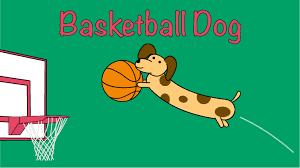

Review: Basketball Dog (2018)
4 out of 5 stars
From director Vicki Fleming comes the heartwarming tale of a boy named Pete (Trent Judson) and his dog Rover (voiced by Brinson Lumblebrunt). You may think a boy and his dog learning the true value of friendship sounds familiar, but a big twist sets this flick apart: Rover plays basketball, and he's doggone good at it.
This movie has everything you could ask for:
While it may not have been necessary to include all 150 minutes of Rover's championship game in real time, Basketball Dog will keep your interest for the entirety of its 4-hour runtime, and the end will have any dog lover in tears. If you love basketball or sports pets, this is the movie for you.
Find the full cast listing at the Basketball Dog website